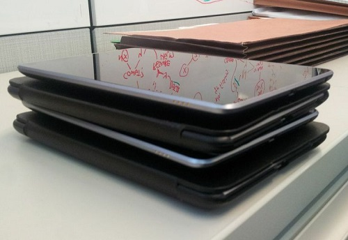

use ↔ to navigate
Tablets!
Surveys!
In-person surveys at your event, using Delta's tablets.
Setup is easy, but requires a few steps.
1. Log into
formhub, an online survey repository by Columbia University.
delta_institute gr8lak3s
2. Write your survey using the
open data kit standard (more on this in a minute). Here's a great
tutorial to get you started.
3. Upload your survey to formhub
Are you ready for tablets?
5. Fire up your tablet. In this case, one of Delta's 4 Nexus 7 tablets.
6. See those little circles at the bottom? Those are user accounts. Click on the one that looks like a little clipboard (Delta).
7. Click on the ODK Collect app icon. It looks like a little clipboard.
ODK collect should already be connected to the formhub account you used earlier. If not, you'll need to go into the admin settings and set it up.
8. Click on the Get Blank Form button.
9. You should see a list of forms. Click the checkbox to the right of the one you'd like to use, then click Get Selected
9. Great! Now that the form has been downloaded to your tablet, click the Fill Blank Form button in the main menu.
10. See your form in the list? Tap on it! That's it!
11. Survey respondents should click Save Form and Exit when they're finished.
This saves the form on your tablet, which is great, especially if you're offline.
But...
We want our responses to live on Formhub.
12. Once you've collected your responses and are back on wifi, open up the ODK Collect app and click on the Send Finalized Form button.
13. Select all of the completed forms you'd like to send (or click the Toggle All button), then click Send Selected. That's it!
Log into your Formhub account and check out your results
A couple more things
You can send forms for people to fill out on their own time!
From the form's page on Formhub, right-click on the little blue Enter Web Form button and copy the link address. You can send this to anyone! Note: the form has to be public for this to work.
Survey shortcuts
If external folks are going to be administering the survey on your behalf, you might want to create a shortcut on the main screen of your tablet.
First, tap on the
app drawer icon, then tap WIDGETS on the top-left.
Swipe to the right until you see ODK Form. Touch and hold the icon and place it wherever you'd like.
A dialogue will pop up with a list of available forms. Select the one you'd like. That's it!
Exporting data
Using Formhub, you can download your survey data in a number of formats, including CSV, XLS, KML(only if your survey includes geographic data), ZIP or gdocs.
Building a survey
ODK surveys are easiest to set up in excel.
Observe the two tabs
in the file.
Note that choices require you to specify a list name for each and every choice.